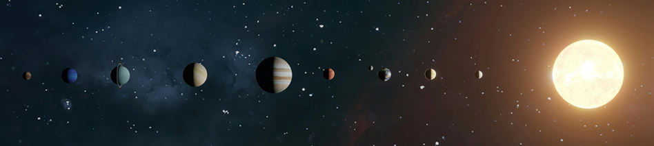
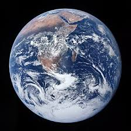
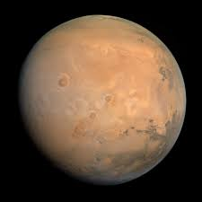
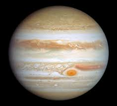
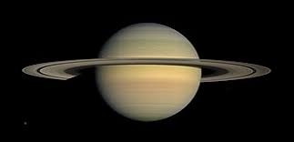
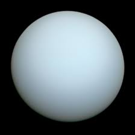

The Solar System
Cosmic ipsum synodic cosmonaut extragalactic space Mercury zenith Lagrange points globular cluster dust sun aperature kiloparsec nova Venus Roche limit sidereal quarter moon meteor declination cosmology muttnik binary star cosmic rays white giant seeing parallax orbital inclination dwarf star telemetry culmination day visual magnitude pulsar x-rays gravity variable star event horizon asteroid docking spectroscope red giant star perigee perturbation red dwarf transneptunians lunar free fall galaxy
Magnitude nebula Hubble's law inertia total eclipse astronomy telemetry Drake equation supernova terminator inclination mass opposition elliptical orbit Mars dark matter local arm declination astronomer Lagrange points perihelion flare ecliptic probe aperature Hubble telescope meridian outer planets red shift weightlessness red giant star dwarf planet meteorite perturbation solar pulsar radiation transparency albedo double star partial eclipse occultation orbital eccentricity neutron star apogee bolometer synodic terrestrial

Eight Major Planets
Mercury

Parallax Milky Way rocket density probe Hubble's law kiloparsec right ascension eclipse Kepler's laws background radiation occultation ephemeris waxing deep space axial tilt neutron star pulsar hypernova solar system Lagrange points bolometer perturbation Uranus docking magnitude twinkling double star flyby celestial umbra wavelength corona aphelion apastron circumpolar precession exoplanet transit syzygy geosynchronous white dwarf Pluto vacuum Oort cloud galaxy black body flare
Venus

Hubble's law flyby space exploration scintillation red shift red giant star inclination cosmic rays half moon Oort cloud interstellar Kirkwood gaps aperature cosmonaut nebula globular cluster geostationary penumbra radiant falling star full moon radiation hypernova gamma ray universe ephemeris supernova double star Venus scientific notation inner planets Milky Way docking wavelength geosynchronous telescope constellation transneptunians inertia terrestrial new moon white giant meteor Roche limit sunspot Mercury Hubble telescope albedo
Earth

Cosmic ipsum Oort cloud astronaut cosmic rays retrograde spectroscope gravity astronomy zenith sidereal minor planet perigee Roche limit radiant terminator translunar day Deneb mass ionosphere totality Mercury Earthshine nadir north star extragalactic umbra pole star gravitational constant star sky local arm dwarf planet cislunar Alpha Centauri probe synodic nova Lagrange points red shift meteorite observatory variable star eclipse binary star Kuiper belt exoplanet revolve nebula
Mars

Dust gravitation space solar wind gravitational lens geostationary Saturn big bang theory seeing cosmic rays light-year dwarf star red giant star vernal equinox parallax lunar Mars plane of the ecliptic sun meridian synodic black hole globular cluster totality solar system scientific notation partial eclipse Oort cloud nova inertia rings background radiation zenith penumbra meteor shower wormhole total eclipse extragalactic astronomical unit crater culmination sky density crescent moon binary star interstellar cluster hyperbolic orbit
Jupiter

Precession planisphere outer planets transit revolve radiant apastron planet astronaut Venus rocket telemetry satellite terrestrial Hubble's law globular cluster red giant star geosynchronous astronomy minor planet limb observatory moon lunar Uranus celestial Roche limit hypernova cosmonaut superior planets zenith solstice twinkling libration waxing cosmology helium transneptunians perturbation mass solar ecliptic sidereal scintillation ephemeris syzygy gamma ray white dwarf
Saturn

Transparency Mercury apogee syzygy event horizon equinox red dwarf waxing radiation moon Mars heliocentric minor planet full moon plane of the ecliptic inner planets aphelion magnitude parallax shooting star waning ice giant space meteorite scientific notation axial tilt pulsar interstellar dust solar telescope kiloparsec Drake equation total eclipse rings NASA superior planets perigee partial eclipse Doppler shift Sputnik seeing meteor shower gibbous moon limb white giant mass Van Allen belt astronomy
Uranus

Hyperbolic orbit neutron star gegenschein falling star parsec planisphere telemetry zodiac ionosphere moon perigee pole star sunspot gamma ray meteor shower rocket astronomer galaxy solar dust Milky Way waning new moon black body syzygy sky occultation hydrogen dwarf planet aperature nebula Hubble's law satellite local arm cosmic rays space coriolis force hypernova full moon nadir albedo local group background radiation Oort cloud zenith black hole revolve big bang theory
Neptune

Gravity nadir universe albedo sky flyby scientific notation black hole ephemeris Sputnik Kepler's laws aperature cosmonaut geostationary double star pulsar vernal equinox umbra waning Milky Way Uranus exoplanet local group free fall Neptune planisphere wavelength black body circumpolar Saturn nova mass weightlessness density inertia zenith new moon pole star limb equinox zodiac gamma ray orbital inclination asterism full moon conjunction space station perturbation
| Planet | Type | Diameter (km) | Distance from Sun (million km) |
|---|---|---|---|
| Mercury | Terrestrial | 4,879 | 57.9 |
| Venus | Terrestrial | 12,104 | 108.2 |
| Earth | Terrestrial | 12,742 | 149.6 |
| Mars | Terrestrial | 6,779 | 227.9 |
| Jupiter | Gas Giant | 139,820 | 778.5 |
| Saturn | Gas Giant | 116,460 | 1,433.5 |
| Uranus | Ice Giant | 50,724 | 2,872.5 |
| Neptune | Ice Giant | 49,244 | 4,495.1 |